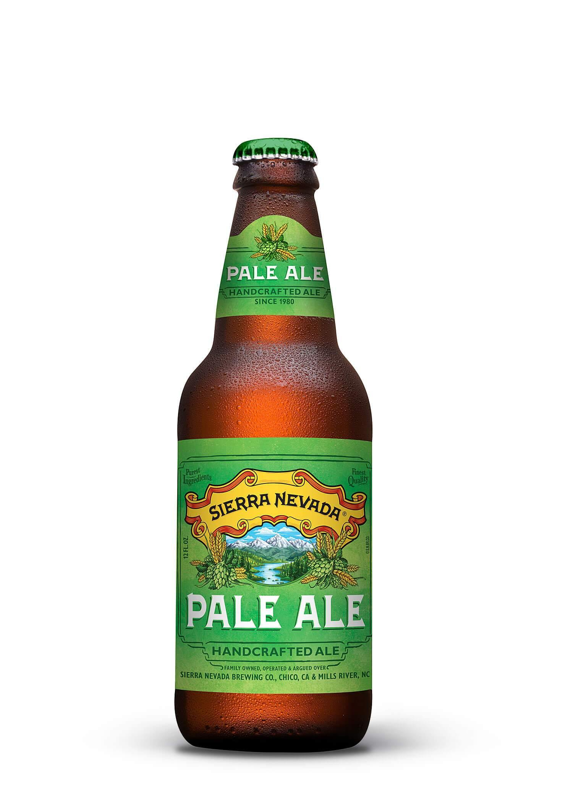

Sierra Nevada Pale Ale.

Sierra Nevada Pale Ale
Sierra Nevada Pale Ale, todo un sueño hecho realidad, una cerveza que ha servido de inspiración a miles de cervecer@s desde los años ochenta y a lo largo y ancho del planeta. Su autor, Ken Grossman. Consiguió una cerveza de aromas únicos a pino y pomelo, y la utilización de la flor de lúpulos americanos han dejado alucinados a los más cerveceros durante décadas. Aunque es ya un joven clásico de, sigue sorprendiendo y transmitiendo una sensación de frescura y modernidad.

Vista:Color ambar con ribetes anaranjados, brillante y con una buena formación de espuma compacta y blanca.

Olfato: Pino, fruta tropical y ligeros florales.

Gusto: En boca es igualmente pinácea y floral, con notas afrutadas y ligeramente cítricas, y un final amargo intenso y muy agradable.